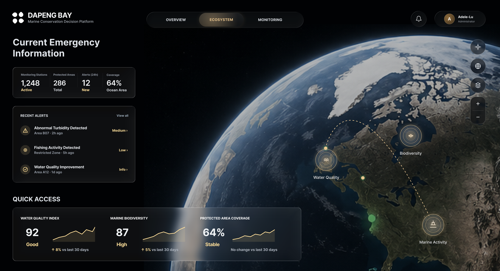

DAPENG BAY
Marine Conservation Decision Platform
Monitoring the planet
Protecting our ocean
Real-time data and AI-driven insights empowering smarter
decisions for a sustainable marine future.
For Hong Kong, Dapeng Bay usually corresponds to Mirs Bay / 大鹏湾, the northeastern marine area around Yan Chau Tong, Tung Ping Chau, Crooked Island and the Sai Kung-Shenzhen border waters. One caveat: many “Dapeng Bay” fisheries papers sample the Shenzhen side, while Hong Kong government/ecology sources usually call the same broader bay Mirs Bay.
MiMo only answers marine, ocean and fish questions.

Current Emergency
Information
Recent Alerts
View allQuick Access
↑ 8% vs last 30 days
↑ 5% vs last 30 days
No change vs last 30 days
Current Emergency Information
In Mills Bay
Good
Google Maps API Key interface is ready. Open this page with ?googleKey=YOUR_KEY or set localStorage.GOOGLE_MAPS_API_KEY.